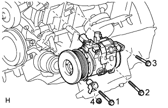

COMPRESSOR (for 2UZ-FE) > INSTALLATION |
| 1. ADJUST COMPRESSOR OIL |
When replacing the compressor and magnetic clutch with a new one, gradually discharge the refrigerant gas from the service valve, and drain the following amount of oil from the new compressor and magnetic clutch before installation.
| 2. INSTALL COOLER COMPRESSOR ASSEMBLY |
 |
Install the cooler compressor and No. 1 compressor stay with the 3 bolts and nut.
Connect the connector.
| 3. CONNECT SUCTION HOSE SUB-ASSEMBLY |
 |
Remove the attached vinyl tape from the hose.
Sufficiently apply compressor oil to a new O-ring and the fitting surface of the cooler compressor.
Install the O-ring to the suction hose.
Connect the suction hose to the cooler compressor with the 2 bolts.
| 4. CONNECT NO. 1 COOLER REFRIGERANT DISCHARGE HOSE |
 |
Remove the attached vinyl tape from the hose.
Sufficiently apply compressor oil to a new O-ring and the fitting surface of the cooler compressor.
Install the O-ring to the discharge hose.
Connect the discharge hose to the cooler compressor with the bolt.
| 5. INSTALL FAN AND GENERATOR V BELT |
 |
Set the V belt onto every part except the belt tensioner, as shown in the illustration.
Loosen the V belt by turning the belt tensioner counterclockwise.
Set the V belt to the belt tensioner.
 |
Check that the belt fits properly in the ribbed grooves.
 |
Check that the arrow on the belt tensioner is within area "A".
If the arrow is outside area "A", replace the fan and generator V belt.
| 6. INSTALL FRONT FENDER APRON SEAL LH |
 |
Install the seal with the 4 clips.
| 7. CHARGE REFRIGERANT |
Perform vacuum purging using a vacuum pump.
Charge refrigerant HFC-134a (R134a).
| Condenser Core Thickness | Air Conditioning Type | Cool Box | Refrigerant Charging Amount |
| 22 mm (0.866 in.) | w/o Rear Cooler | w/ Cool Box | 870 +/-30 g (30.7 +/-1.1 oz.) |
| w/o Cool Box | 870 +/-30 g (30.7 +/-1.1 oz.) | ||
| w/ Rear Cooler | w/ Cool Box | 1010 +/-30 g (35.6 +/-1.1 oz.) | |
| w/o Cool Box | 960 +/-30 g (33.9 +/-1.1 oz.) | ||
| 16 mm (0.630 in.) | w/o Rear Cooler | w/ Cool Box | 770 +/-30 g (27.2 +/-1.1 oz.) |
| w/o Cool Box | 770 +/-30 g (27.2 +/-1.1 oz.) | ||
| w/ Rear Cooler | w/ Cool Box | 970 +/-30 g (34.2 +/-1.1 oz.) | |
| w/o Cool Box | 920 +/-30 g (32.5 +/-1.1 oz.) |

| 8. WARM UP ENGINE |
Warm up the engine at less than 1850 rpm for 2 minutes or more after charging the refrigerant.
| 9. CHECK FOR REFRIGERANT GAS LEAK |
After recharging the refrigerant gas, check for refrigerant gas leakage using a halogen leak detector.
Perform the operation under these conditions:
 |
Using a halogen leak detector, check the refrigerant line for leakage.
If a gas leak is not detected on the drain hose, remove the blower motor control (blower resistor) from the cooling unit. Insert the halogen leak detector sensor into the unit and perform the test.
Disconnect the connector and wait for approximately 20 minutes. Bring the halogen leak detector close to the pressure switch and perform the test.
| 10. INSTALL UPPER RADIATOR SUPPORT SEAL |
Install the radiator support seal with the 7 clips.